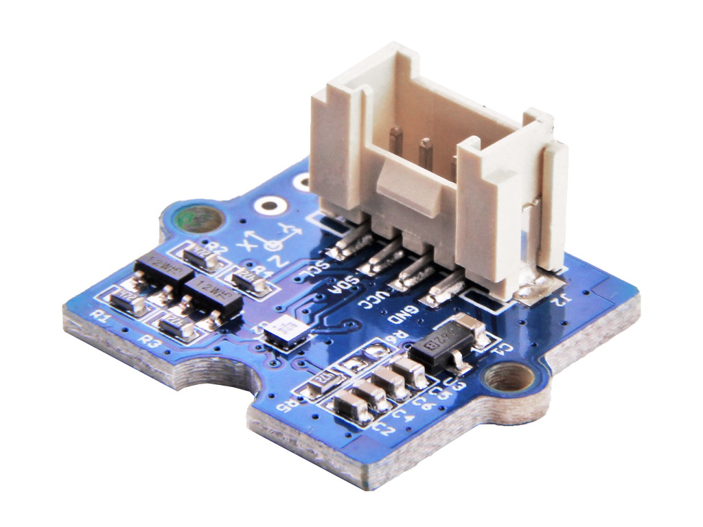

Grove system
Seeed Studio's Grove system connects sensors with one four-wire cable:
GND, VCC, and two signal wires, the first of which (yellow) carries the module's main signal. Juno reaches a Grove
module in one of two ways, depending on the board, and its drivers take the socket's pin, so the same driver code works
with either.
Two ways to connect
Grove Base Shield, on the UNO boards

The Grove Base Shield is a passive adapter for the UNO headers, used
on the UNO R3, UNO WiFi Rev2, UNO R4 WiFi and UNO Q. Its A0-A3, D2-D8, UART and I2C sockets are ordinary UNO pins;
GroveBaseShield
names them. Seat it on the board's UNO headers and plug the module into a socket; the diagram is a socket map, not the
shield's physical layout:
+-------------------------------------------------------------+
| Grove Base Shield |
| |
| Digital [D2] [D3] [D4] [D5] [D6] [D7] [D8] getD2()... |
| Analog [A0] [A1] [A2] [A3] getA0()... |
| I2C [I2C] [I2C] [I2C] [I2C] SDA A4, SCL A5 |
| UART [UART] RX D0, TX D1 |
+------------------------------+------------------------------+
| seated on the UNO headers
+------------------------------v------------------------------+
| UNO R3 / UNO WiFi Rev2 / UNO R4 WiFi / UNO Q |
+-------------------------------------------------------------+
Grove DHT22 ---- cable ----> [D4]
Java: dht.read(shield.getD4(), reading, reading.length, frame, frame.length)
Nano Connector Carrier, on the Nano ESP32

The Arduino Nano Connector Carrier holds the Nano ESP32 and adds four Grove sockets (two analog, UART and I2C) plus a
Qwiic connector; NanoConnectorCarrier names them. Set its input selector switch to 3.3 V for the Nano ESP32. See the
Nano ESP32 page for its full pin map.
The carrier seen from its connector side, USB cable at the bottom; * marks each Grove socket's yellow signal wire:
+---------------------------------------------+
| Grove I2C Grove UART |
| [ GND ] [ RX * ] |
| [ VCC ] [ TX ] |
| [ SDA ] A4 [ VCC ] |
| [ SCL *] A5 [ GND ] |
| +-------------+ |
| Qwiic | microSD | |
| [ I2C ] | slot | |
| A4/A5, 3.3 V | CS D4 | |
| +-------------+ |
| Grove A0/A1 Grove A2/A3 |
| [ GND ] [ A2 * ] |
| [ VCC ] [ A3 ] |
| [ A1 ] [ VCC ] |
| [ A0 * ] [ GND ] |
+-------------------[ USB ]-------------------+
Grove light sensor ---- cable ----> [Grove A0/A1]
Java: light.rawValue(carrier.getGroveA0())
Keep digital modules out of the carrier's I2C socket: its bus pull-ups hold a digital output between low and high.
Grove Sensors
Every driver below allocates nothing while it runs and takes the socket's pin as an argument, so it works the same on
the Grove Base Shield (shield.getD4(), shield.getA0(), ...) and on the Nano Connector Carrier
(carrier.getGroveA0(), carrier.getGroveA2()). Create each driver once, at startup.
| Sensor | Socket | Driver | Reads |
|---|---|---|---|
| Temperature and Humidity Sensor Pro (DHT22) | Digital | GroveDht22 |
Temperature and humidity, in tenths |
| Temperature and Humidity Sensor (DHT11) | Digital | GroveDht11 |
Whole-degree temperature and humidity |
| Temperature Sensor v1.2 | Analog | GroveTemperatureSensorV12 |
Degrees Celsius from a thermistor |
| Light Sensor v1.2 | Analog | GroveLightSensorV12 |
Raw light level |
| Sound Sensor v1.6 | Analog | GroveSoundSensorV16 |
Raw microphone level |
| Gas sensor | Analog | GroveAnalogGas |
Raw gas reading |
| PIR Motion Sensor | Digital | GrovePirMotion |
Motion detected or not |
| 3-Axis Digital Compass V2.0 | I2C | GroveCompassProbe |
Raw magnetic field on X, Y and Z |
| Infrared emitter and receiver | Digital | GroveInfraredEmitter, GroveInfraredReceiver |
Infrared link to a LEGO RCX |
Temperature and Humidity Sensor Pro (DHT22)
Temperature and humidity in tenths of a degree and of a percent. The caller owns the reading and frame buffers:

GroveDht22 dht = new GroveDht22();
int[] reading = new int[GroveDht22.READING_LENGTH];
int[] frame = new int[GroveDht22.FRAME_LENGTH];
if (dht.read(shield.getD4(), reading, reading.length, frame, frame.length)) {
int tenthsCelsius = reading[GroveDht22.TEMPERATURE_TENTHS_CELSIUS];
int tenthsPercent = reading[GroveDht22.HUMIDITY_TENTHS_PERCENT];
}
Temperature and Humidity Sensor (DHT11)
The DHT11 reports whole numbers; it reads the same way as the DHT22:

GroveDht11 dht = new GroveDht11();
int[] reading = new int[GroveDht11.READING_LENGTH];
int[] frame = new int[GroveDht11.FRAME_LENGTH];
if (dht.read(shield.getD3(), reading, reading.length, frame, frame.length)) {
int celsius = reading[GroveDht11.TEMPERATURE_CELSIUS];
int percent = reading[GroveDht11.HUMIDITY_PERCENT];
}
Temperature Sensor v1.2
A 100-kilohm thermistor divider; the driver converts the ADC count to degrees Celsius with Seeed's B constant:

GroveTemperatureSensorV12 temperature = new GroveTemperatureSensorV12();
float celsius = temperature.celsius(shield.getA0());
Light Sensor v1.2
A raw ADC sample; calibrate it for the installation if an illuminance value is needed:

GroveLightSensorV12 light = new GroveLightSensorV12();
int level = light.rawValue(shield.getA1());
Sound Sensor v1.6
An ADC sample of the amplified microphone signal, not a decibel measurement:

GroveSoundSensorV16 sound = new GroveSoundSensorV16();
int level = sound.rawValue(shield.getA2());
Gas sensor
The analog output of a Grove gas sensor. Useful for watching changes; a gas concentration needs the particular sensor's warm-up and calibration procedure:

GroveAnalogGas gas = new GroveAnalogGas();
int value = gas.rawValue(shield.getA3());
PIR Motion Sensor
A digital output that goes high on motion. Configure the socket once, then poll it. On the Nano Connector Carrier, use an analog socket rather than the I2C one:

GrovePirMotion pir = new GrovePirMotion();
pir.begin(shield.getD2());
boolean motion = pir.motionDetected(shield.getD2());
3-Axis Digital Compass V2.0
Seeed's BMM150 compass, on an I2C socket, never a digital one. detect() starts the bus and confirms the chip;
readRaw fills uncalibrated X, Y and Z counts. On the Nano ESP32, pass the board's bus:
new GroveCompassProbe(ArduinoNano.getI2c()).

GroveCompassProbe compass = new GroveCompassProbe();
int[] axes = new int[GroveCompassProbe.AXIS_LENGTH];
if (compass.detect() == GroveCompassProbe.BMM150 && compass.readRaw(axes, axes.length)) {
int x = axes[GroveCompassProbe.X_AXIS];
}
Infrared emitter and receiver
A Grove infrared emitter and receiver form the infrared link to a LEGO Mindstorms RCX brick. Wrap each socket's pin,
then hand both to RemoteRcx, which sets them up:


GroveInfraredEmitter emitter = new GroveInfraredEmitter(carrier.getGroveA0());
GroveInfraredReceiver receiver = new GroveInfraredReceiver(carrier.getI2cScl());
See LEGO for driving the brick, and the Nano ESP32 page for a complete example.